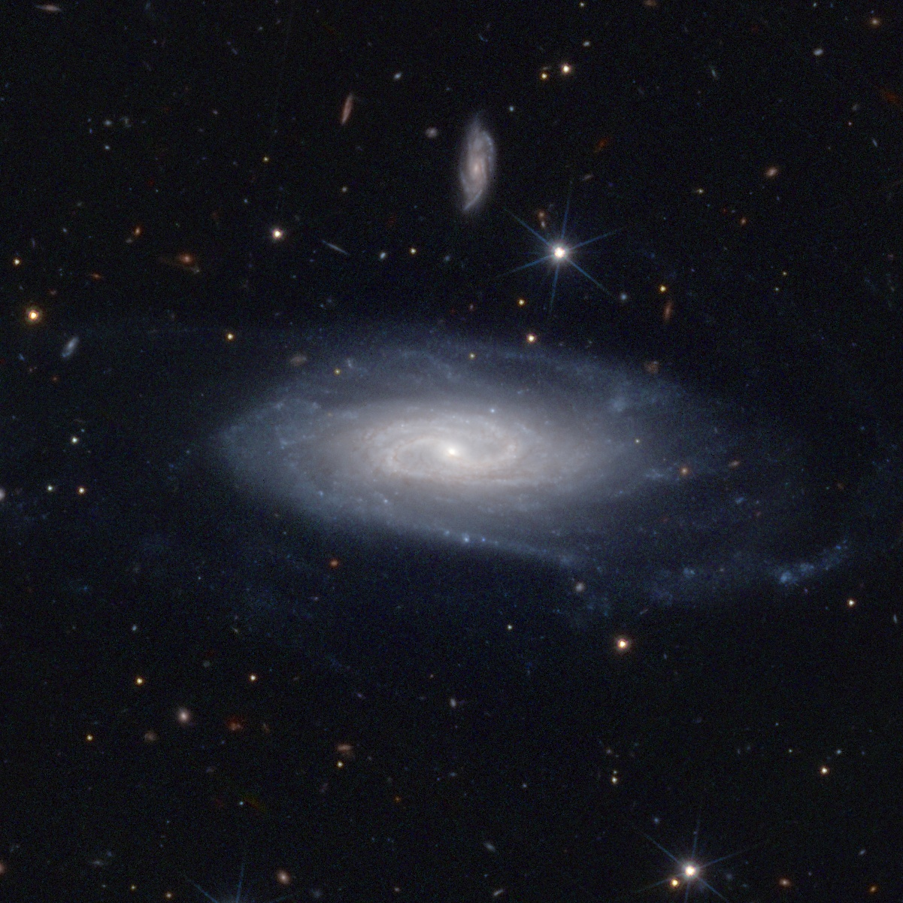

Bring colors to Euclid tiles!
Azulero is a toolbox which, among others, provides scripts to download and process Euclid observations over a MER tile.
For rendering color images, azul process detects and inpaints bad pixels (cold pixels, saturated stars…), and combines the 4 channels (I, Y, J, H) into an sRGB image. Input data files can be selected and downloaded with azul retrieve, which connects to public or private data archives. Multiple images are assembled over a grid with azul arrange. Last but not least, azul roam produces flowing videos, for example by panning and zooming images.
Azulero is now compatible with Unix and Windows pipelines, which makes batch processing simple, including with parallelization (see Pipelines). The image below is the raw output of:
azul retrieve UGC11116 -r 1m --from pdr | azul process

A 2’ x 2’ field around UGC 11116.
Credit: ESA Euclid/Euclid Consortium/NASA/Q1-2025/Antoine Basset (CNES)